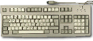

Kuæište kompjutera koje u sebi sadrži: napajanje (min 200W), matiènu ploèu sa pripadajuæim komponentama, I/O karticu, grafièku karticu koja odgovara tipu monitora, flopi i hard disk drajv sa adapterom. Postoji još veliki broj spoljašnjih ureðaja koji se mogu prikljuèivati na kompjuter. Pomenuæemo za poèetak samo miša i štampaèe.
Kuæište može biti položeno (BABY i SLIM LINE) ili uspravno (MINI, MIDI i TOWER).

Namenjena je unošenju podataka u kompjuter ili drugaèije, korisnièki interfejs sa kompjuterom.
- XT koristi se samo na XT kompjuterima i ima 86 tastera. Ima 10 funkcijskih tastera sa leve strane.
- AT koristi se na AT i XT kompatibilnim kompjuterima. Ima 101 ili 102 tastera i FUNCijski tasteri se nalaze na vrhu i ima ih 12. Izdvojeni su kursori i numerièka tastatura. Skoro sve mogu raditi na XT kompjuterima jednostavnim prebacivanjem preklopnika koji se nalazi sa donje strane tastature.
Postoje još i PS/2 i terminal tastatura koje samo izgledom potseæaju na prethodne dve ali se ne mogu menjati meðusobno.

Može biti monohromatski ili color monitor.
Monohromatski mogu prikazivati od dve nijanse jedne boje (zelena, narandžasta, siva), do 256 nijansi (Mono VGA). Namenjeni su korisnicima koji na radnim mestima unose podatke i informacija o boji im nije toliko važna kolliko je važno da slika ne treperi. Prijatni su za višeèasovni rad (posebno sa zelenim fosforom). Koriste se u poštama, bankama, obraèunskim službama i jeftinim XT i AT kompjuterima.
- Hercules (HGC), poèetak 80-tih, rezolucija 720x350 taèaka.
- Mono VGA- isto kao i kolor VGA samo bez boje.
Color prikazuju onoliko boja koliko može da im obezbedi grafièki adapter. Od 1987. godine kada se pojavio VGA standard, pojavom novih procesora poveæavala se i potreba za kvalitetnijom slikom na monitorima. Zdravo ljudsko oko može da razlikuje 16 miliona boja i 256 nijansi sive a to je maksimum koji omoguæavaju današnje najkvalitetnije grafièke kartice.
Rezolucije grafièkih kartica:
- CGA (poèetak 80-tih) rezolucija 640 x 200.
- EGA rezolucija 640 x 350.
- VGA 1987.god., rezolucija 640 x 480.
- SVGA 1989. god., rezolucija 800 x 600.
- XGA 1991. god., rezolucija 1024 x 768.
Promenljiva koja odreðuje kvalitet kod svih monitora je takozvani DOT PITCH. Uglavnom je kod SVGA monitora 0.28mm, a predstavlja najmanje rastojanje izmeðu dve taèke na monitoru koje može da prikaže bez pretapanja taèke u taèku. Time je odreðen i naèin na koji se prikazije slika na ekranu monitora tkzv. Interlace ili Non interlace.